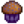

Ételek

|
Hiányos fordítás Ezt a cikket vagy szakaszt nem fordították le teljesen magyarra. Üdvözlünk az oldal fordításával. |
A főzés egy játékmechanika, amely elérhetővé válik a parasztház első fejlesztése után. A ház fejlesztése ad egy konyhát, amely tartalmaz egy tűzhelyet és egy hűtőszekrényt. A tűzhely egy főző terület, míg a hűtőszekrény 36 tárolóhelyet biztosít, hasonlóan egy láda-hoz. A hűtőszekrény különleges abban, hogy össze van kötve a főzőterülettel, mintha a játékos tárgymenüjének bővítése lenne. Csak a játékos tárgymenüjében, a hűtőszekrényben vagy a Mini-Hűtőben található hozzávalók használhatóak receptben.
A játékosnak meg kell tanulnia a recepteket, mielőtt lehetősége lenne megfőzni azokat. A nem megtanult receptek ikonját fekete körvonallal jelöli a játék, a kurzor ráhúzása pedig "???" jelet mutat. Ha a metanult recept bármelyik hozzávalója hiányzik, akkor az ikonja szürke, de a tooltipben látható információt a receptről. Bármely hiányzó hozzávalót pirossal emeli ki a játék. Ha egy recept összes hozzávalója megtalálható a játékos hátizsákjában, vagy a hűtőszekrényben (vagy a kettő kombinációjában), akkor a recept ikonja teljes szinezetében látszódik.
Állapothatások
Egyszerre csak egy étel és egy ital hatása lehet a játékoson, egy új hatással járó étel/ital elfogyasztása eltörli az előző hatását. Ha egy olya új ételt/italt evett/ivott meg a játékos, ami nem jár hatással, akkor az előző étel/ital hatása megmarad. (Így egy Tripla eszpersszó hatása megfér egy Fűszeres angolna hatása mellett).
Teljesítmények
Három főzéssel kapcsolatos teljesítmény létezik:
- Szakács (Főz meg 10 különféle receptet)
- Sous Chef (Főz meg 25 különféle receptet)
- Gourmet Chef (Főzd meg az összes receptet)
Qi fűszerkeverék
Qi fűszerkeverék, amiből 10-et lehet megvásárolni Qi diós szobájából  10-ért, az összes elkészített étel minőségét aranyra állítja, ezzel az energiabevitelt és az életerő-töltést növeli 80%-kal és az eladási árát 50%-kal. Ezeken kívül megnöveli az adott állapothatásokat (kivéve gyorsaság hatásokat) 1 szinttel. Például egy Tengeri hab puding +5 horgászást ad a +4 helyett, hogyha Qi fűszerkeverékkel van elkészítve. A tárgy azonnal elhasználódik, ha a játékos tárgymenüjében, hűtőjében vagy mini-hűtőjében van az étel elkészítésekor. Ha a játékos az összes fűszerkeverékét elhasználta, akkor a játék ezt a következőképpen jelzi egy üzenettel: "Elhasználtad az összes Qi fűszerkeverékedet."
10-ért, az összes elkészített étel minőségét aranyra állítja, ezzel az energiabevitelt és az életerő-töltést növeli 80%-kal és az eladási árát 50%-kal. Ezeken kívül megnöveli az adott állapothatásokat (kivéve gyorsaság hatásokat) 1 szinttel. Például egy Tengeri hab puding +5 horgászást ad a +4 helyett, hogyha Qi fűszerkeverékkel van elkészítve. A tárgy azonnal elhasználódik, ha a játékos tárgymenüjében, hűtőjében vagy mini-hűtőjében van az étel elkészítésekor. Ha a játékos az összes fűszerkeverékét elhasználta, akkor a játék ezt a következőképpen jelzi egy üzenettel: "Elhasználtad az összes Qi fűszerkeverékedet."
Receptek
| Kép | Név | Leírás | Hozzávalók | Energia / Életerő | Állapothatás | Állapothatás időtartama | A recept forrása | Eladási ár | |||
|---|---|---|---|---|---|---|---|---|---|---|---|
| Tükörtojás | A napos oldalával felfelé. | N/A | N/A | Felújított parasztház | |||||||
| Omlett | Ez szuper bolyhos. | N/A | N/A |
|
|||||||
| Saláta | Egy egészséges kerti saláta. | N/A | N/A |
|
|||||||
| Sajtos karfiol | Nagyszerű az illata! | N/A | N/A |
|
|||||||
| Sült hal | Növényes ágyon megsütött hal. | N/A | N/A |
|
|||||||
| Paszternák leves | Friss és életerős. | N/A | N/A |
|
|||||||
| Zöldséges keverék | Ebben aztán van tápanyag. | N/A | N/A |
|
|||||||
| Teljes reggeli | Ezzel kész leszel meghódítani az egész világot! |
|
|||||||||
| Főtt tintahal | Annyira rágós. | N/A | N/A |
|
|||||||
| Furcsa zsemle | Vajon mi lehet benne? | N/A | N/A |
|
|||||||
| Szerencsés ebéd | Egy különleges kis étel. |
|
|||||||||
| Sült gomba | Földies és aromás. |
|
|||||||||
| Pizza | Népszerű étel, és minden oka megvan rá. | N/A | N/A |
|
|||||||
| Babos fondü | Ez aztán tényleg egészséges. |
|
|||||||||
| Mázas yamgyökér | Édes és kielégítő... A cukornak kicsit karamellás íze van. | N/A | N/A |
|
|||||||
| Ponty meglepetés | Enyhe és olajos. | N/A | N/A |
|
|||||||
| Tócsni | Ropogós és aranybarna! |
|
|||||||||
| Palacsinta | Egy dupla rétegnyi bolyhos, finom palacsinta. |
|
|||||||||
| Lazac vacsora | A rálocsolt citromtól lesz különleges. | N/A | N/A |
|
|||||||
| Haltaco | Ízletes szaga van. |
|
|||||||||
| Ropogós sügér | Váó, a bundája tökéletes. |
|
|||||||||
| Csípős ropogós | Fűszeres, bundás paprika, ami sajttal van megtöltve. |
|
|||||||||
| Kenyér | Egy ropogós francia kenyér. | N/A | N/A |
|
|||||||
| Tom Kha leves | Ezek az ízek hihetetlenek! |
|
|||||||||
| Pisztráng leves | Elég sós. |
|
|||||||||
| Csokis torta | Gazdag és omlós, rajta vastag csokiborítással. | N/A | N/A |
|
|||||||
| Rózsaszín torta | Kicsi, szív alakú sütik vannak a tetején. | N/A | N/A |
|
|||||||
| Rebarbara pite | Mmm, csípős és édes! | N/A | N/A |
|
|||||||
| Süti | Nagyon rágós. | N/A | N/A |
|
|||||||
| Spagetti | Egy régi kedvenc. | N/A | N/A |
|
|||||||
| Sült angolna | Olajos, de tele van ízekkel. |
|
|||||||||
| Fűszeres angolna | Ez nagyon fűszeres! Légy óvatos. |
|
|||||||||
| Sashimi | Nyers hal, ami vékony szeletekre van vágva. | N/A | N/A |
|
|||||||
| Maki tekercs | Hal és rizs, ami hínárba van betekerve. | N/A | N/A |
|
|||||||
| Tortilla | Ezt akár ételek betekerésére, vagy önmagában való elfogyasztásra is lehet használni. | N/A | N/A |
|
|||||||
| Vörös tábla | Tele van antioxidánsokkal. |
|
|||||||||
| Padlizsán parmezán | Csípős, sajtos, és csodálatos. |
|
|||||||||
| Rizs puding | Krémes, édes, és jó móka az elfogyasztása. | N/A | N/A |
|
|||||||
| Jégkrém | Nehéz olyat találni, aki ne kedvelné ezt. | N/A | N/A |
|
|||||||
| Kék áfonyás lepény | Finom és frissítő. | N/A | N/A |
|
|||||||
| Őszi bőkezűség | Egy kóstoló az évszakból. |
|
|||||||||
| Tökleves | Egy szezonális kedvenc. |
|
|||||||||
| Szuper étel | Ez egy valóban energizáló étel. |
|
|||||||||
| Vörös áfonya szósz | Egy ünnepélyes étel. |
|
|||||||||
| Töltelék | Ahh... a meleg kenyér és zsálya illata. |
|
|||||||||
| Gazdák ebédje | Ez majd beindít. | ||||||||||
| Túlélő burger | A felfedezők kényelmes eledele. | ||||||||||
| Tenger gyümölcsei | Ez melegen tart téged a hideg tengeri levegőn. | ||||||||||
| Bányászok eledele | Ez fent fogja tartani az energiádat. | ||||||||||
| Tálalt gyökerek | Ettől csak még többet akarsz majd. | ||||||||||
| Tripla eszpresszó | Még hatékonyabb, mint az egyszerű kávé! | ||||||||||
| Tengeri hab puding | Ez a finom puding valóban bevezeti Önt a tengeri gondolkodásmódba! | ||||||||||
| Alga leves | Ez egy kicsit nyálkás. | N/A | N/A |
|
|||||||
| Fakó húsleves | Egy ízletes húsleves, némi kénnel vegyítve. | N/A | N/A |
|
|||||||
| Szilva puding | Egy hagyományos ünnepi étel. | N/A | N/A |
|
|||||||
| Articsóka mártás | Hűsítő és frissítő. | N/A | N/A |
|
|||||||
| Rázva pirított | Julienne-es vágással előállított növények rizses ágyon. | N/A | N/A |
|
|||||||
| Pörkölt mogyoró | A pörkölési folyamat erős erdei ízt kölcsönöz neki. | N/A | N/A |
|
|||||||
| Tökös pite | Selymes tökkrém pelyhes kéregben. | N/A | N/A |
|
|||||||
| Retek saláta | Olyan ropogósak a retkek! | N/A | N/A |
|
|||||||
| Gyümölcssaláta | A nyári gyümölcsök ízletes kombinációja. | N/A | N/A |
|
|||||||
| Szeder kosár | Nincs hozzá fogható. | N/A | N/A |
|
|||||||
| Vörös áfonyás cukorka | Elég édes ahhoz, hogy elrejtse a keserű gyümölcs ízét. | N/A | N/A |
|
|||||||
| Bruschetta | Sült paradicsom ropogós fehér kenyéren. | N/A | N/A |
|
|||||||
| Káposztasaláta | Könnyed, friss és nagyon egészséges. | N/A | N/A |
|
|||||||
| Hegedűfejes rizottó | Egy krémes rizses étel, amit hirtelen sült páfrányfejjel tálalnak. Kissé gyenge. | N/A | N/A |
|
|||||||
| Mákos muffin | Nyugtató hatása van. | N/A | N/A |
|
|||||||
| Halászlé | Ez a tökéletes módja annak, hogy egy hideg tengeri éjszakán felmelegítsd magad. |
|
|||||||||
| Homár krémleves | Ez az ízletes leves Willy titkos családi receptje. |
|
|||||||||
| Éticsiga | Vajban megforgatott csigák, amik tökéletesre lettek sütve. |
|
|||||||||
| Halragu | Nagyon hasonlít a szaga a tengeréhez. Bár az íze sokkal jobb. |
|
|||||||||
| Juhar rúd | Ez egy édes fánk, aminek a tetejét gazdagon borítja a juharfa máz. |
|
|||||||||
| Ráktorta | Rák, kenyérmorzsa, és tojás, ami pástétommá van formálva, majd aranybarnára lett sütve. |
|
|||||||||
| Garnélakoktél | Egy pazar étvágygerjesztő, amit frissen kifogott garnélából készítenek. |
|
|||||||||
| Gyömbérsör | Egy pikáns üdítő, ami a gyomorra tett jó hatásáról ismert. | A vulkánban lévő Törpe Boltból |
|||||||||
| Banános puding | Egy krémes, csodálatos trópusi ízű desszert. |
|
|||||||||
| Mangós ragacsos rizs | Az édes mangó és a kókusz ebből a rizsből igazi különlegességet hoz ki. |
|
|||||||||
| Poi | Egy hagyományos étel, amit frissen elfogyasztva gyengéd, édes íze van. | N/A | N/A |
|
|||||||
| Trópusi curry | Egy egzotikus, illatos curry, amit ananász edényben tálalnak. | ||||||||||
| Tintahaltintás ravioli | Ideiglenesen megvéd a negatív hatásoktól. | ||||||||||
| Mohaleves | Sűrű és nyálkás, de ehető. | N/A | N/A |
Hozzávalók
Legalább 88 különböző fajta tárgy kell ahhoz, hogy mind a 80 féle ételt el tudja készíteni a játékos, ezek a következők:
- 26 termés
- 13 gyűjtött hozzávaló
- 4 fagyümölcs
- 2 állati termék
- 4 kézműves termék
- 3 hozzávaló az egyebekből (juharfaszirup, tintahal tinta, moha)
- 17 horgászós hozzávalók
- 8 rákvarsából szerzett hozzávaló
- 5 hozzávaló Pirre Boltjából
- 6 olyan étel, ami más ételekhez hozzávaló
Az alábbi táblázatok feltételezik, hogy már elkészített ételeket is felhasznál a játékos más ételek elkészítéséhez. Például felhasznál egy krumplit egy tócsnihoz, és a Tócsnit felhasználja egy Teljes reggeli elkészítéséhez. Ezek után még egy Krumplira lesz szüksége a játékosnak, hogy elkészítse a Tenger gyümölcsei receptet is. Amikor az összes receptet elkészítette a játékos, akkor megkapja az Ínyenc Séf teljesítményt, de nem lesz a játékosnál Tócsni, mivel azt felhasználta egy másik recepthez
Termések
| Kép | Név | Szükséges mennyiség | Évszak | Megnövési idő | Megjegyzésel | Ehhez szükséges |
|---|---|---|---|---|---|---|
| Paszternák | 2 | Tavasz | 4 nap | |||
| Vadkáposzta | 2 | Tavasz | 6 nap | Betakarítás kaszával történik. | ||
| Krumpli | 2 | Tavasz | 6 nap | 20% eséllyel dob extra krumplikat | ||
| Kék jazz | 1 | Tavasz | 7 nap | |||
| Zöldbab | 2 | Tavasz | 10 nap | Lugason nő. Megnövés után minden 3. napon újranő. | ||
| Karfiol | 1 | Tavasz | 12 nap | Óriás terméssé nőhet meg. | ||
| Rebarbara | 1 | Tavasz | 13 nap | A magvak az Oázisból vásárolhatók meg. | ||
| Fokhagyma | 2 | Tavasz | 4 nap | 2. évtől érhető el | ||
| Erős paprika | 2 | Nyár | 5 nap | Megnövés után minden 3. napon újranő. | ||
| Retek | 2 | Nyár | 6 nap | |||
| Már | 1 | Nyár | 7 nap |  Mákos muffin (1) | ||
| Paradicsom | 7 | Nyár | 11 nap | Megnövés után minden 4. napon újranő. | ||
| Dinnye | 2 | Nyár | 12 nap | Óriás terméssé nőhet meg. | ||
| Kék áfonya | 2 | Nyár | 13 nap | Több áfonyát ad betakarításnál. Megnövés után minden 4. napon újranő. | ||
| Kukorica | 2 | Nyár/Ősz | 14 Dnap | Megnövés után minden 4. napon újranő. | ||
| Vörös káposzta | 3 | Nyár | 9 nap | 2. évtől érhető el. | ||
| Bordáskel | 1 | Ősz | 4 nap | |||
| Padlizsán | 2 | Ősz | 5 nap | Megnövés után minden 5. napon újranő. | ||
| Amaránt | 1 | Ősz | 7 nap | Betakarítás kaszával történik. | ||
| Vörös áfonya | 4 | Ősz | 7 nap | Betakarításnál 2 vörös áfonyát ad. Megnövés után minden 5. napon újranő. | ||
| Jamgyökér | 2 | Ősz | 10 nap | |||
| Tök | 3 | Ősz | 13 nap | Óriás terméssé nőhet meg. | ||
| Cékla | 1 | Ősz | 6 nap | A magvak az Oázisból vásárolhatók meg. | ||
| Articsóka | 2 | Ősz | 8 nap | 2. évtől érhető el. | ||
| Ananász | 1 | Nyár | 14 nap | |||
| Tarógyökér | 4 | Nyár | 10 nap |
Gyűjtött hozzávalók
| Kép | Név | Szükséges mennyiség | Évszak | Hely | Ehhez szükséges |
|---|---|---|---|---|---|
| Szeder | 2 | Ősz | Stardew Valley | ||
| Barlangi répa | 5 | Összes évszak | Bányák | ||
| Közönséges gomba | 3 | Tavasz/Ősz | Stardew Valley | ||
| Pitypang | 1 | Tavasz | Stardew Valley | ||
| Kókuszdió | 1 | Összes évszak | Calico Sivatag | ||
| Hegedűfej páfrány | 1 | Nyár | Titkos Erdő | ||
| Mogyoró | 4 | Ősz | Stardew Valley | ||
| Vad torma | 1 | Tavasz | Stardew Valley | ||
| Póréhagyma | 1 | Tavasz | Stardew Valley | ||
| Kucsmagomba | 1 | Tavasz | Barlang, Titkos Erdő | ||
| Vad szilva | 2 | Ősz | Stardew Valley | ||
| Téli gyökér | 1 | Tél | Stardew Valley, Bányák | ||
| Gyömbér | 3 | Összes évszak | Gyömbér sziget, Tigris Ragacsok dobják |
Fagyümölcsök
| Kép | Megnevezés | Szükséges mennyiség | Forrás | Évszak | Ehhez szükséges |
|---|---|---|---|---|---|
| Alma | 1 | Almafa | Ősz | ||
| Sárgabarack | 1 | Sárgabarackfa | Tavasz | ||
| Banán | 1 | Banánfa | Nyár | ||
| Mangó | 1 | Mangófa | Nyár |
Állati termékek
Megjegyzés: Minden olyan recept, amihez tej szükséges, ott használható Tej, Nagy tej, Kecsketej vagy Nagy kecsketej.
Tojásos receptekhez az összes fajta tojás felhasználható, ide tartozik: Űr tojás, Aranytojás, Kacsatojás, Strucctojás
| Kép | Megnevezés | Szükséges mennyiség | Forrás | Jegyzetek | Ehhez szükséges |
|---|---|---|---|---|---|
| Tojás | 8 |  Csirkék, Kacsák, Űr csirkék, Arany csirkék, Struccok |
|||
| Tej | 11 |   Tehenek, Kecskék |
Megszerezhető tejesvödörrel. |
Kézműves termékek
Érdemesebb megvenni a kávét a Hullócsillag szalonból  300g-ért mintsem előállítani azt.
300g-ért mintsem előállítani azt.
| Kép | Megnevezés | Szükséges mennyiség | Forrás | Beleadandó | Termelési idő | Ehhez szükséges |
|---|---|---|---|---|---|---|
| Sajt | 3 | Sajtprés | 3,3 óra | |||
| Majonéz | 2 | Majonézkészítő | 3 óra | |||
| Űrmajonéz | 1 | Majonézkészítő | 3 óra | |||
| Kávé | 3 | Keghordó | 2 óra |
Egyebek
| Kép | Név | Szükséges mennyiség | Forrás | Termelési idő | Ehhez szükséges |
|---|---|---|---|---|---|
| Juharfaszirup | 1 | Megcsapolt Juharfa | 7-8 days | ||
| Tintahal tinta | 2 | Tintagyermek vagy Kék tintahal adhatja, Halastó, amiben Tintahal vagy Éjféli tintahal van | A halastóban lévő halak mennyiségétől függ | ||
| Moha | 20 | Mohás fák | N/A |
Halak
| Kép | Név | Szükséges mennyiség | Hely | Idő | Évszak | Időjárás | Nehézség | Ehhez szükséges |
|---|---|---|---|---|---|---|---|---|
| Tuna | 1 | Óceán | 6:00- 19:00 | Nyár/Tél | Bármilyen | 70 | ||
| Szardínia | 2 | Óceán | 6:00- 19:00 | Tavasz/Ősz/Tél | Bármilyen | 30 | ||
| Keszeg | 1 | Folyó | 6:00- 14:00 | Összes évszak | Bármilyen | 35 | ||
| Nagyszájú sügér | 1 | Hegyi tó | 6:00- 19:00 | Összes évszak | Bármilyen | 50 | ||
| Szivárványos pisztráng | 1 | Folyó, Hegyi tó | 6:00- 19:00 | Nyár | Napos | 45 | ||
| Lazac | 1 | Folyó | 6:00- 19:00 | Ősz | Bármilyen | 50 | ||
| Lepényhal | 1 | Óceán | 6:00- 20:00 | Tavasz/Nyár | Bármilyen | 50 | ||
| Éjféli ponty | 1 | Hegyi tó, Erdei tó | 22:00-2:00 | Ősz/Tél | Bármilyen | 55 | ||
| Ponty | 4 | Hegyi tó, Erdei tó, Csatorna, Titkos Erdő, Mutáns bogár odú | Bármikor | Összes évszak | Bármilyen | 15 | ||
| Naphal | 1 | Folyó | 6:00-19:00 | Tavasz/Nyár | Napos Tavaszi szeles |
30 | ||
| Angolna | 2 | Óceán | 16:00-2:00 | Tavasz/Ősz | Esős | 70 | ||
| Tintahal | 1 | Óceán | 18:00-2:00 | Tél | Bármilyen | 75 | ||
| Tengeri uborka | 1 | Óceán | 6:00-19:00 | Ősz/Tél | Bármilyen | 40 | ||
| Bármilyen hal | 2 | Bárhol | Bármikor | Összes évszak | Bármilyen | N/A | ||
| Hínár | 1 | Óceán | Bármikor | Összes évszak | Bármilyen | 0 | ||
| Zöld alga | 5 | Bárhol, kivéve a Farm tavacska | Bármikor | Összes évszak | Bármilyen | 0 | ||
| Fehér alga | 2 | Bányák, Csatorna, Mutáns bogár odú, Boszorkány mocsara | Bármikor | Összes évszak | Bármilyen | 0 |
Rákvarsából származó hozzávalók
Megjegyzés: Kagylók és Éti kagylók gyűjthetők a Strandon bármelyik évszkban. Rákokat dobhatnak a Kőrákok vagy a Lávarák halálukkor.
| Kép | Név | Szükséges mennyiség | Helyszín | Ehhez szükséges |
|---|---|---|---|---|
| Homár | 1 | Óceán | ||
| Kagyló | 1 | Óceán | ||
| Folyami rák | 1 | Édesvíz | ||
| Rák | 1 | Óceán | ||
| Éti kagyló | 1 | Óceán | ||
| Garnélarák | 2 | Óceán | ||
| Csiga | 1 | Édesvíz | ||
| Parti csiga | 2 | Édesvíz |
Bolti hozzávalók
Megvásárolható Pierre Boltjából.
Hozzávaló ételek ételekhez
Ezeknek a hozzávalóik már a fenti táblázatokban benne vannak. Ezek más tálak hozzávalói.
| Kép | Név | Szükséges mennyiség | Hozzávalók | Ehhez szükséges |
|---|---|---|---|---|
| Tükörtojás | 1 | |||
| Tócsni | 2 | |||
| Palacsinta | 1 | |||
| Tortilla | 2 | |||
| Kenyér | 3 | |||
| Omlett | 1 |
Nyereséges receptek
- Lásd még: Mikor csináljunk sashimit halakbólból
Habár a legtöbb étel kevessebbet ér, mint a hozzávalói, ettől függetlenül vannak kifévetlek.
Megjegyzés: Lehet, hogy érdemesebb megtartani a halakat a Felhívásos küldetésekre, ami általában 3-szor fizeti meg a hal árát.
A következő receptek fognak profitot termelni, ha a legrosszabb minőségű alapanyagokból állítja elő a játékos:
|
☆Nem proftiáló, ha a játékosnak megvan a Horgász vagy Halász szakma
|
Igazából a maximum profit nagyobb, ha a játékos tartósító tégelyben, Keghordóban, Majonézkészítőben, vagy Sajtprésben dolgozza fel az alapanyagokat.
Az egyetlen kivétel az Algaleves (mivel az algát nem lehet sehogysem feldolgozni) (+ 40g) és a Fakó húsleves (+
40g) és a Fakó húsleves (+ 100g). 1.6-os verzió előtt a tálalt gyökerek is profitálóak voltak akkor, ha alap minőségű volt a Téli gyökér (+
100g). 1.6-os verzió előtt a tálalt gyökerek is profitálóak voltak akkor, ha alap minőségű volt a Téli gyökér (+ 5g). Mivel 1.6-ban ezt egy tartósító tégelybe lehet helyezni, ezért már nem profitáló.
5g). Mivel 1.6-ban ezt egy tartósító tégelybe lehet helyezni, ezért már nem profitáló.
Az 1.6-os verzióban jobb, ha a játékos egy Halfüstölőben dolgozza fel a halakat, így csak azokat a halakat éri meg sashimivé alakítani, amik kevesebbet érnek  28g-nál.
28g-nál.
Ettől eltekintve a haszonszerzési célú főzés csak akkor válik vonzóvá, ha az alapanyag-előállítás jelentősen meghaladja a feldolgozó kapacitást.
Küldetések
 100 000g-t érő frissen elkészített ételt kell leadnia a játékosnak a Qi éhes kihívása küldetésben. A küldetés ideje alatt az összes elkélszített étel el lesz látva a "Friss" jelzővel. Ezek nem kerülhetnek egy rakásba olyan ételekkel, amiken nincs rajta ez a jelző.
100 000g-t érő frissen elkészített ételt kell leadnia a játékosnak a Qi éhes kihívása küldetésben. A küldetés ideje alatt az összes elkélszített étel el lesz látva a "Friss" jelzővel. Ezek nem kerülhetnek egy rakásba olyan ételekkel, amiken nincs rajta ez a jelző.
Jegyzetek
- Every recipe searches for ingredients in the following locations, always in the same order from the bottom right slot to the top left slot:
- first in the player's inventory
- then in the main refrigerator
- finally in any Mini-Fridges
- When auto-sorted with the Organize button, this bottom-right-first order will automatically consume lower quality items of the same type. However, for recipes with substitutes, place ingredients accordingly as desired towards the bottom right, in order to avoid using more valuable ingredients in less valuable recipes, or in recipes that accept a wide variety of ingredients. As an example, Tuna (which is required for Fish Taco) is accepted in Sashimi which accepts any type of fish. However, by placing a Mussel in the bottom right slot, the Mussel will be picked first and save the Tuna for the more exclusive and valuable recipe.
- When searching multiple Mini-Fridges, the game picks from the last placed one in the exact chronological order in which the fridges were first placed, and then works backwards. The location of the fridge in the farmhouse does not matter.
Hibák
- Mobile only: If you eat a food that gives you a buff and press the ‘Swap to previous save’ button it will carry the buffs to the previous save. You can use this to eat difficult to craft/find food without losing it.
- The game has a limited display area for active buffs at the top right of the screen (about the width of 3½ buff icons). For any buff icons active outside of that range, the source and timer will not be displayed when hovered over.
Előzmények
- Sometime between v1.11 and v1.3, a bug was removed that caused the duration of buffs to decrease as the day progressed.
- 1.3.27: Artichoke Dip, Pumpkin Pie, Chowder, and Lobster Bisque now accept Large Milk in place of regular milk.
- 1.4: Added Shrimp Cocktail, Seafoam Pudding, Triple Shot Espresso. Fixed bugged Bean Hotpot buff. Standardized cooking tab with stove interface across all languages. Added Mini-Fridge as a storage option for ingredients.
- 1.5: Added Banana Pudding, Ginger Ale, Mango Sticky Rice, Poi, Tropical Curry, Squid Ink Ravioli. Goat Milk and Large Goat Milk can now be used in recipes.
- 1.6: Added Moss Soup.